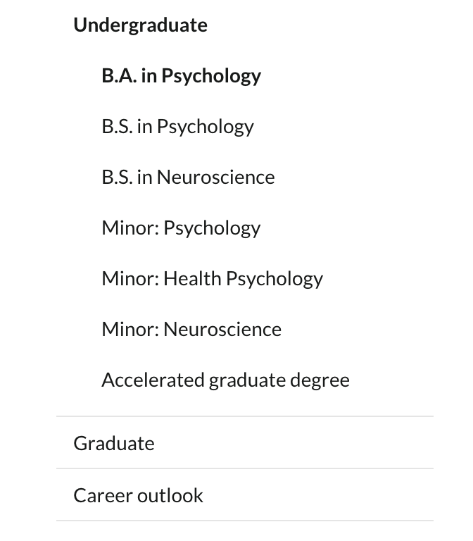
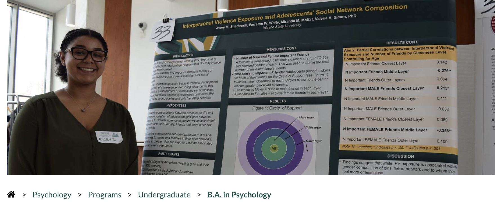
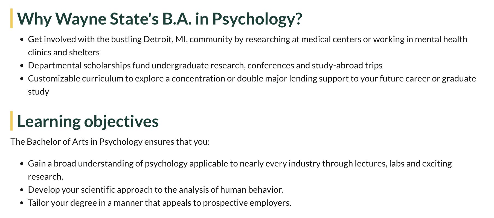
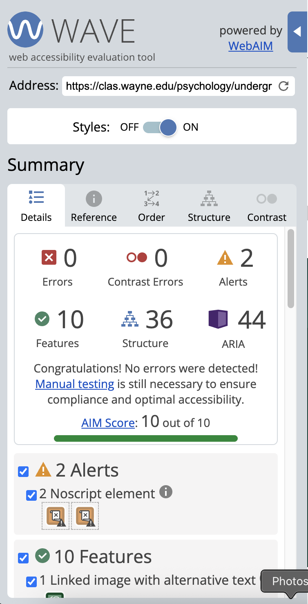
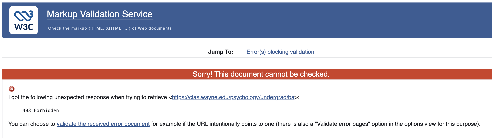
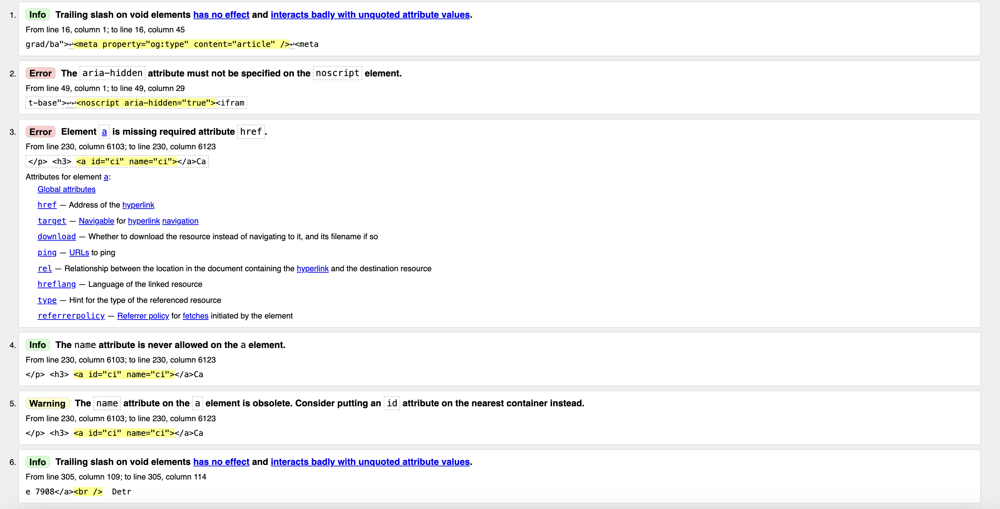
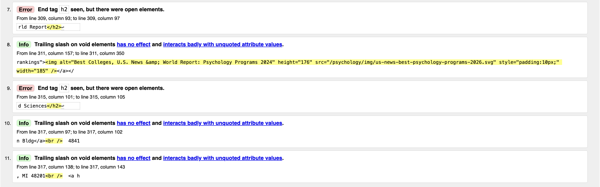

- Jump To Page Selection
- Jump To Main Section
- Jump To Heading Section
- Jump To List Section
- Jump To Link Section
- Jump To Table Section
- Jump To Accessibility Section
- Jump To Validation Section
- Jump To Summary Section
Page Selection
As seen on my resume webage, in undergrad at Michigan I double majored in psychology, and women's studies.
While I visited both pages, I ultimately felt the Psychology page has more content and meets the requirements of this assignment a bit better. The webpage
has a clear header containing the Wayne State logo and program department name.
Footer with avenues for connecting with the school for the latest updates and happenings.
Several list itmes, both ordered and ordered, with some containng links.
There is am image on the pain as well as several heading visible heading levels.
Section-by-Section Layout Analysis
-
Site Header
-
Degree Details
-
Program Images
-
Site Footer
This element would be marked up by using the "header" html element. Using header is appropriate because the content presented here introduces the program, provides the Wayne State University branding, and gives navigational cues for the user to explore further. I also noticed that the header is frozen at the top of the page; as you scroll through the main content you are always reminded of what site you are viewing and have easy access to links related to the program. This is very important considering the University has several programs and each page has a similar theme, this allows for an extra distinction.

This element would be marked up by using the "nav" html element as the page menu can be used to navigate through the program's content. By using the navigation element we can wrap all key links for browsing a page in one block for ease of use. This page menu also adapts dynamically based on what page the user is viewing which assist in locating relevant information.

This element would be marked up by using the "main" html element as the begins the page's core content. The image is actually a carousel or gallery of images that welcome the user to the page and advertises the program by showcasing student successes. Placing it in main keeps the branding of the site clean while adding a responsive element for the user to visually engage with.
This element would be marked up by using the "footer" html element as the can be found at the bottom of the webpage, indicating the end. Unlike the header of the page that is frozen to the top and scrolls with you, the footer element is anchored to the bottom. This makes it easy for the user to understand that the page has ended and digest the contact information present in the element.
Heading Hierarchy Analysis
There are several headings present on the WSU Psychology page. The are as follows:
- "Bachelor of Arts in Psychology"
- Heading level = h1
- The title of the degree program is the main subject of the whole webpage, defines the most imporant section, and is justifiably the main header
- "Why Wayne State's B.A. in Psychology?"
- Heading level = h2
- The question being asked is a subtopic branched off from the main.
- "Learning objectives"
- Heading level = h2
- The question being asked is a subtopic branched off from the main.
- "B.A. in Psychology program requirements and curriculum"
- Heading level = h2
- The question being asked is a subtopic branched off from the main.
- "Psychology honors program"
- Heading level = h2
- The question being asked is a subtopic branched off from the main.
- "Funded research"
- Heading level = h2
- The question being asked is a subtopic branched off from the main.
- "Bachelor of Arts in Psychology career outlook"
- Heading level = h2
- The question being asked is a subtopic branched off from the main.
- "Career insights"
- Heading level = h3
- The question being asked is a subtopic branched off from a subtopic.
- "Scholarships and financial aid"
- Heading level = h2
- The question being asked is a subtopic branched off from the main.
- "Learn more about the B.A. in Psychology at Wayne State University"
- Heading level = h2
- The question being asked is a subtopic branched off from the main.
- "Department of Psychology"
- Heading level = h2
- This heading begins the footer details.
- "U.S. News & World Report"
- Heading level = h3
- This heading branches off from the Department of Psychology details in the footer.
- "College of Liberal Arts and Sciences"
- Heading level = h3
- This is related to the Department of Psychology details in the footer.
List Analysis
While I have already discussed one list that can be found on the page, several more are present.
List 1
The above list is visually formatted as a horizontal navigation menu, aka breadcrumbs. While the order matters contextually because we are giving the user directions through the website, it does not need to be an ordered list because there is no order that the user must browse the content in.
They could skip from Psychology to Undergraduate, or the B.A in Psychology all the way to the home icon which would take them to the Wayne State University College of Liberal Arts and Sciences site.
In this case, the order serves more as root directory so that how to reach the page can be understood, and using an unordered list is well suited.
List 2

The two lists above are from the main section of the webpage. Their order does not matter no matter the context. These are simple bullets that outline the program's aim. Using unordered lists in this way is great for delivering key objectives for the user to scan and walk away with a clear picture of what the program is all about.
Link Analysis
While many of the links stay within the ".wayne.edu" domain, and even within the "clas" college domain, there are several that direct users to external sites.
-
Internal Links
- Explore psychology courses: https://bulletins.wayne.edu/undergraduate/college-liberal-arts-sciences/psychology/#coursestext
- Psychology Clinic: https://psychclinic.wayne.edu/
- Apply Now: https://wayne.edu/apply
-
Wayne State College of Liberal Arts and Science Linkedin: https://linkedin.com/school/WayneStateCLAS
- This link is visually indicated with the LinkedIn logo in the WSU color scheme in the footer. I would expect this to open in new page due to the target blank attribute assigned.
-
Compliance Managers: https://www.onetonline.org/link/summary/11-9199.02
- This link is contained in a table that provides career outlook details. I would expect this to open in new page due to the target blank attribute assigned.
-
U.S News & World Report: https://www.usnews.com/best-graduate-schools/top-humanities-schools/psychology-rankings
- This link is visually indicated with the U.S News & World Report logo as an image placed in the footer of the page. I would not expect this to open in new page as there is no target blank attribute assigned.
External Links
Career Outlook Table
There is only one table present on the webpage and provides possible career paths a person with a B.A in Psychology could hope to explore. The table does use "th" to label header cells for the rows. Considering the table is presenting sample job titles and their corresponding median salaries, I believe this is an appropriate presentation for the data. This keeps the information very organized and easy to maintain.
WAVE Accessibility Tool

The WSU Psychology webpage recieved a 10 out of 10 AIM Score and zero errors were detected! Still, there were 2 alerts provided that there are noscript elemts on the page. I interpret these alerts as there being content that may need to be further configured to be compatible with screen readers if JavaScript were disabled. WAVE indicates that there is one linked image and it does include alternate text! While the "noscript" alert did appear, the description of this alert and the placement of the "noscript" element in the html lead me to believe no immediate action needs to be taken. Following the "noscript" semantic element "aria-hidden="true"" is written whcih I believe means a screen reader or accessibility technology would skip it.
HTML Validation
W3C Markup Validation Service:

Initially when I attempted to complete validation, I recieved an error that the document is unable to be checked. I then was able to validate the error document recieved, so I hope this is acceptable.


The two images above detail the 11 total errors, info, and warnings found on the WSU Psych webage. Of these 11 messages, there are four errors. Two of the errors pertain to second level headings "h2" appearing as end tags but on open elements. These do not interfere with the appearance of the webpage but are syntactical and should be corrected. W3C indicates that the errors are in the footer of the page, however I cannot locate them in the html. This emphasizes the importance of consistency in coding as the smallest of errors can extensive effort to debug. If I were to write clean, valid HTML and insert it into this page, I may recieve an error message because this element is closed int he incorrect place which would be a headache to resolve. To prevent the potential headache and heartache of the developer who may succeed the current site owner, I recommend that all h2 heading opening and closings be reviewed, paying close attention to how they are nested.
Summary
Overall, this webpage is structured very well! The navigational aids with the sidebar, header, and breadcrumbs provide clear directions for the user to explore the site and gain complete information of what the WSU program offers. Each of the elements is well-suited to the content it is presented, tables for data, lists for key observations, and footers for "next steps" and closing details. As for the accessibility of the site, the WAVE tool did identify opportunities for ensuring compatibility with screen readers. To me, this was the most glaring error I encountered while evaluating this site, and if it does prevent all users from equitably receiving the content then I believe correcting it would have the most positive impact.